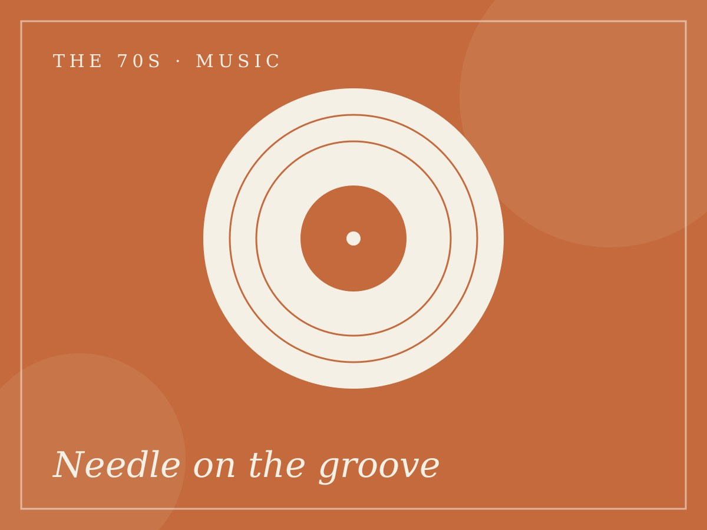
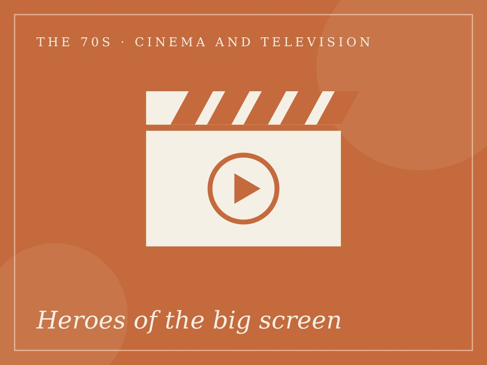
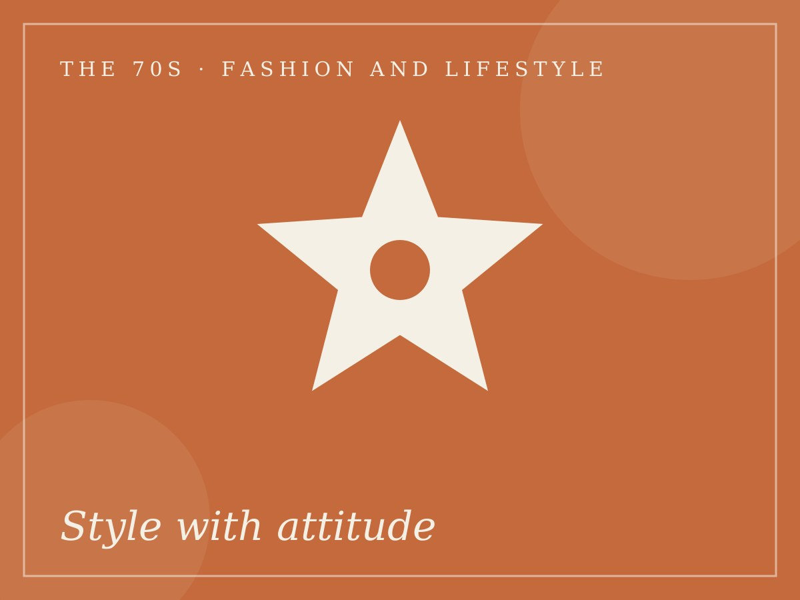
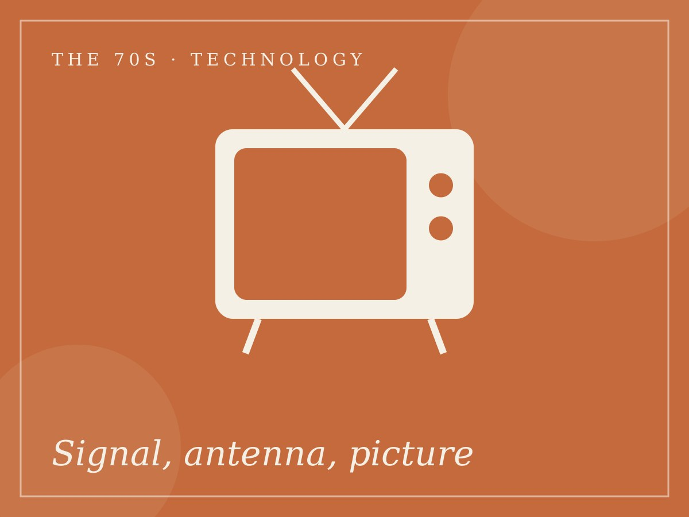
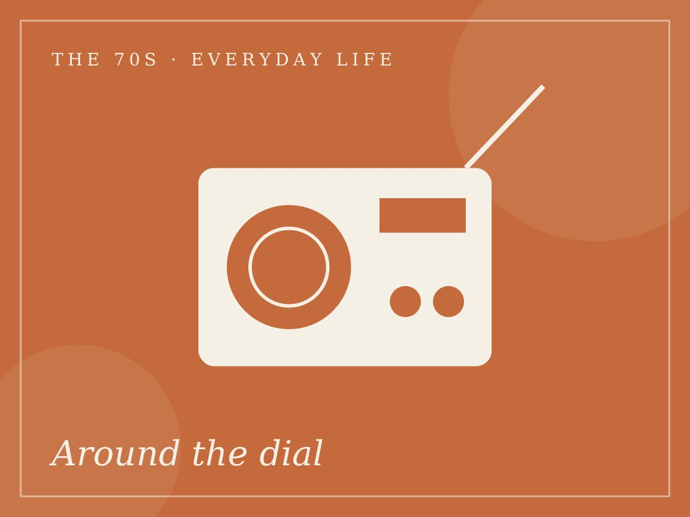

Chapter 01 of 04 · 1970–1979
The 70s
The Era of Expression
Bold flares, crackling vinyl and big-screen heroes. The seventies were loud, colourful and unafraid to feel everything, from single-screen cinemas to the crackle of a transistor radio.

01 / 05
Music
R.D. Burman's playful sound
Film scores like Yaadon Ki Baaraat (1973) mixed Indian melody with fresh rhythms and inventive instruments.
Voices in every home
Playback singers such as Kishore Kumar and Lata Mangeshkar made film songs household favourites.

02 / 05
Cinema and Television
Amitabh Bachchan, the angry young man
Zanjeer (1973) and Deewaar (1975) shaped his screen image, and Sholay (1975) became one of Hindi cinema’s best-loved films.
India’s first superstar
Rajesh Khanna’s romantic roles, including Anand (1971), had audiences queuing at the box office.

03 / 05
Fashion and Lifestyle
Flares and bold collars
Bell-bottoms, wide collars and bold prints were the look of the screen heroes.
Cinema as style guide
Chiffon sarees and bold prints worn by film heroines were widely copied by fans.

04 / 05
Technology
Aryabhata reaches orbit
India’s first satellite, Aryabhata, was launched in April 1975, a milestone for science and national pride.
Television reaches the villages
Television began in India in 1959. The 1975–76 SITE experiment used a satellite to beam programmes to rural communities.

05 / 05
Everyday Life
Radio at the heart of the home
Transistor radios and Vividh Bharati’s film-music programmes were part of daily routine in many households.
Painted posters and single screens
Hand-painted film hoardings announced the latest release outside single-screen cinemas.